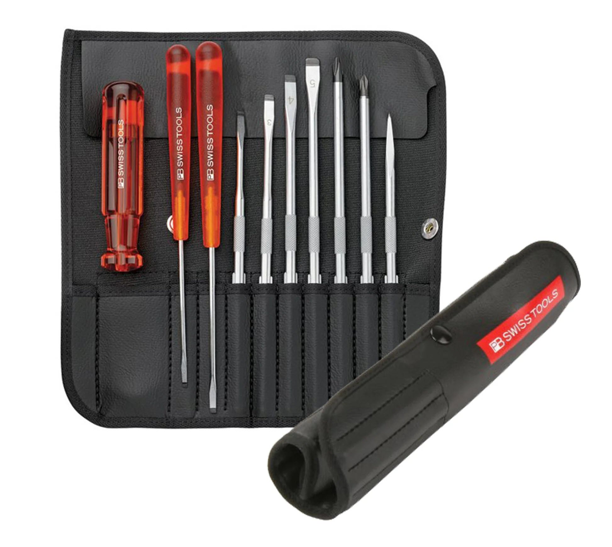

9.ประแจเลื่อน (Adjustable wrench)
ประแจเลื่อน (Adjustable wrench) เป็นเครื่องมือช่างที่ใช้สำหรับขันน็อตและสลักเกลียว โดยมีปากประแจที่สามารถปรับขนาดได้ เหมาะสำหรับงานที่ต้องการขันน็อตและสลักเกลียวหลายขนาด สามารถใช้ได้กับงานทั่วๆ ไปมีความยืดหยุ่นมากกว่า ประแจแบบปากตาย นอกจากนี้ยังสามารถใช้จับชิ้นงานอื่นๆ ได้อีกเช่นท่อน้ำได้เช่นกัน แต่ประสิทธิภาพการจับจะไม่เท่ากับ คีมคอม้า

10.ไขควงชุด
การใช้งานชุดไขควงคือ เลือกไขควงที่มีขนาดหัวและประเภทตรงกับหัวสกรู ใส่ปลายไขควงให้สนิทกับร่องสกรูออกแรงกดเล็กน้อยพร้อมกับหมุนไขควง ตามเข็มนาฬิกาเพื่อขันสกรูให้แน่น และ ทวนเข็มนาฬิกาเพื่อคลายสกรู. สิ่งสำคัญคือต้องออกแรงกดอย่างมั่นคงและเลือกใช้ขนาดไขควงที่เหมาะสมเสมอ เพื่อป้องกันความเสียหายต่อทั้งสกรูและไขควง